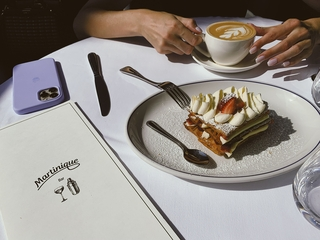

Elementos de Links e Imagens
-Link para Sites externos ou Caminho Absoluto
Tag de links podemos adicionar links externos ao nosso site sendo assim podemos ser redirecionados ao site
selecionados. Podemos tambem por a opção target="_blank" - Assim o site vai abrir em uma nova guia sem fechar
o nosso site.
Se escreve da seguinte maneira:
<-a href="url ou local da pasta">"nome que aparece nosite"<-/a>. obs:Sem os -.
Um exemplo:
<-a href="https://youtube.com" target="_blank">Vai para o youtube<-/a> - Caminho Absoluto.obs:
Sem os -.
Na prática ficaria igual ao exemplo abaixo:
Vai para o youtube
-Link de caminhos relativos
Tag de links relativos onde podemos adicionar links "locais" esses links levará as nossa paginas criadas em nossa
pasta do projeto, como exemplo podemos ir de nossa página principal para a nossa página de sobre nós, sobre a
empresa, dentre outras.
Se escreve da seguinte maneira:
<-a href="paginadeexemplo.html">Ir para Página de exemplo.<-/a> obs:Sem os -.
E para retornar a essa página que estamos deve ser feita da seguinte maneira no código da página de teste:
<-a href="Links.html">Voltar para a página Links<-/a>.obs:Sem os -.
Agora na Prática:
Ir para a Página de exemplo.
-Adicionar Imagem e Gif
Nessa tag podemos adicionar imagens de todos os tipos como JPG,JPEG,PNG e GIF. Podendo colocar um link
direto da internet, onde pode acabar tento alguns problemas. Tambem podemos colocar um um link de nossa pasta
de arquivos, sendo muito mais dificil termos algum problema com nossa imagem.
Se escreve da seguinte maneira:
<-img src="endereço_da_imagem" alt="Descrição da sua imagem". obs:Sem os -.
Exemplos:
<-img src="img/Floresta .jpg" alt="Floresta com neblina" width="300"(isso significa o tamanho de nossa imagem
quando colocamos somente o width ele ja completa o outro deixando a imagem melhor sem distorcer).
obs:Sem os -.

<-img src="img/application-8326_256.gif" alt="gif de aprovado em uma prova" width="300">.
obs:Sem os -.

-Imagem Clicavel
Podemos tambem fazer imagens clicaveis, como se fossem botões, para fazer isso utilizamos o seguinte
sistema:
<-a href="../index.html">.:
<-img src="img/voltarpaginainicial.png" alt="Voltar PAgina Inicial">.
<-/a>.obs:Sem os -.
-Tag map
Nessa tag podemos mapear os itens de nossa imagem fazendo com que eles fiquem como um botão, assim sendo
possivel acessar urls clicando em determinado item de sua image. Para realizarmos isso precisamos usar o
seguinte site:
https://www.image-map.net/
Acessar Site
Após acessarmos o site precisamos fazer o upload de nossa foto e cadastrar os ponto de acesso, selecionando
assim o objeto e logo em seguida selecionando o link de redirecionamento.
Depois é só clicar no botão Show Me The Code!, e copiar o código para o nosso
arquivo.
Como demonstramos na prática a seguir:
<-img src="img/fotoexemplo.jpg" usemap="#image-map">.obs:Sem os -.
<-map name="image-map">
<-area target="_blank" alt="Iphone" title="Iphone" href="https://apple.com" coords="11,111,62,52"
shape="rect">.obs:Sem os -.
<-area target="_blank" alt="Prato de Comida" title="Prato de Comida"
href="https://www.ifood.com.br/delivery/votorantim-sp/outback---shopping-iguatemi-esplanada-parque-
bela-vista/a455b173-18f3-4702-95eb-8ea4164668dc"
coords="320,143,308,101,262,83,218,79,165,88,129,122,134,145,163,173,225,183,271,176,300,165"
shape="poly">.obs:Sem os -.
<-/map>.obs:Sem os -.

Voltar Página Inicial